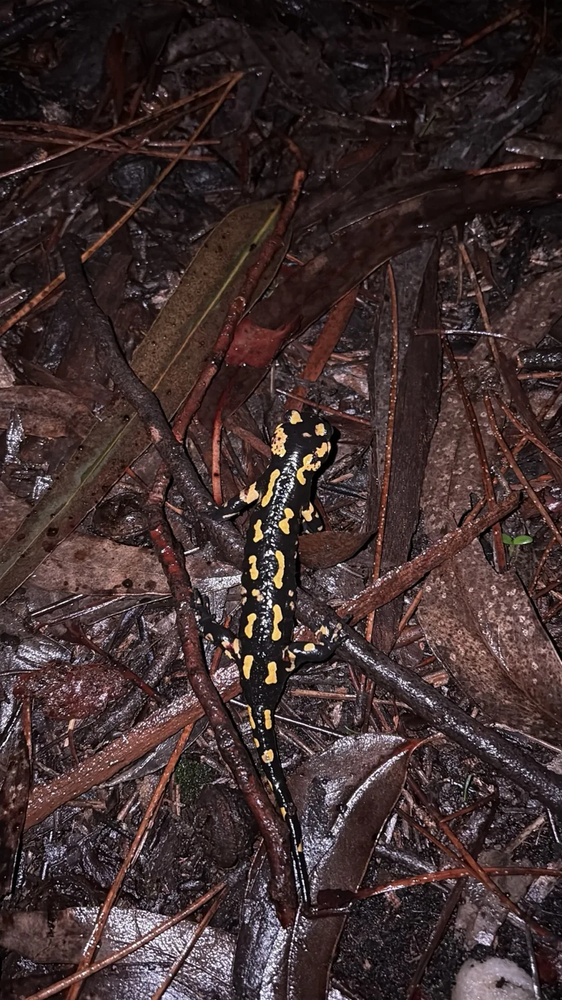
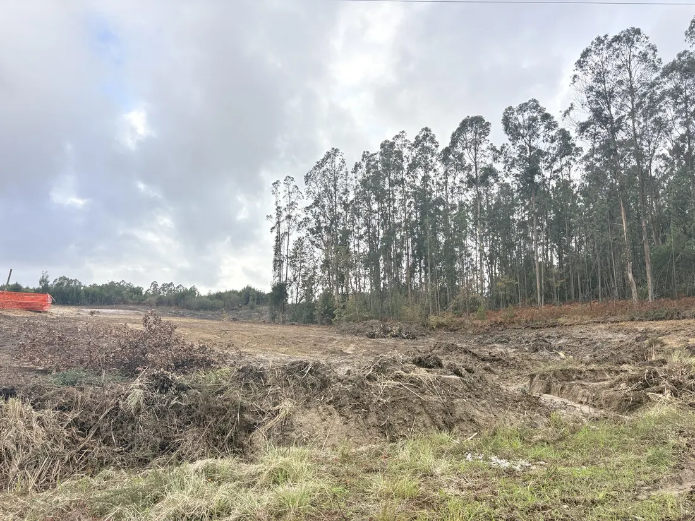
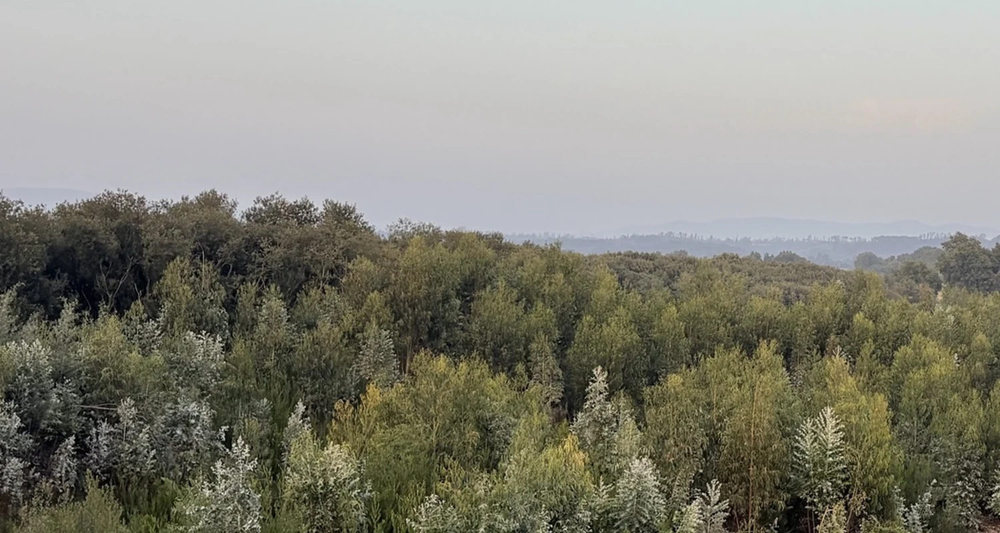

Already here
Woodland, birds and paths where people can spend time in nature — without paying or driving elsewhere.
Já existe
Um bosque, aves e caminhos onde as pessoas podem estar na natureza — sem pagar nem ter de ir de carro para outro lugar.
Near Taboeira and Azurva, a real woodland is still here, with birds, trees and paths where people walk. But the approved plan also includes a golf course, homes and new roads in the wider area. I have seen trees cleared nearby, apparently in another part of the plan. How much of the existing woodland can still be saved?
This matters to me personally, too. A woodland near my old home in Braga helped me through a difficult time. Read the Sete Fontes story ↓
Entre a Taboeira e a Azurva ainda existe um bosque verdadeiro, com aves, árvores e caminhos onde as pessoas passeiam. Mas o plano aprovado também prevê um campo de golfe, casas e novas estradas nesta zona. Vi árvores removidas nas proximidades, aparentemente noutra parte do plano. Quanto do bosque que já existe ainda podemos conservar?
Este tema também me toca pessoalmente. Um bosque perto da minha antiga casa, em Braga, ajudou-me numa fase difícil. Ler a história de Sete Fontes ↓
Woodland, birds and paths where people can spend time in nature — without paying or driving elsewhere.
Um bosque, aves e caminhos onde as pessoas podem estar na natureza — sem pagar nem ter de ir de carro para outro lugar.
A 74.4-hectare golf course is planned in UE-2, alongside homes and roads in other parts of the project.
Um campo de golfe de 74,4 hectares na UE-2, além de casas e estradas noutras partes do projeto.
I photographed clearing nearby, apparently in UE-1, not proof of golf-course work. Which trees and paths will remain?
Fotografei árvores removidas nas proximidades, aparentemente na UE-1, sem que isso prove o início das obras do golfe. Que árvores e caminhos vão ficar?
The central question: Can we change the project to keep more of the forest that is already here?A questão principal: Podemos alterar o projeto para conservar mais do bosque que já existe?
Aveiro has approved a plan for this area. It divides the land into sections called UE (short for Unidade de Execução). The names sound complicated, but they simply help us see what is proposed for each part.
New homes, roads and other buildings are shown near the stadium and towards Azurva. The clearing I photographed seems to be here. I have asked for the relevant permissions to be checked.
This part covers about 115.5 hectares. A 74.4-hectare golf course is planned alongside tourist accommodation, homes and roads. Much of the area is still green today — but green on a plan may mean something quite different.
The drawings include green spaces and paths. That's welcome, but will they keep the trees that are already there? And will local people still be able to walk among them, freely?
The drawings show what is proposed, not exactly which individual trees will be cut or which existing paths will stay open. Those are answers we still need.
Aveiro aprovou um plano para esta zona. Nele, os terrenos aparecem divididos em áreas chamadas UE (abreviatura de Unidade de Execução). O nome parece complicado, mas ajuda-nos a perceber o que está previsto para cada parte.
Estão previstas casas, ruas e outras construções junto ao estádio, na direção da Azurva. A limpeza que fotografei parece situar-se aqui. Pedi que fossem verificadas as autorizações.
Esta parte tem cerca de 115,5 hectares. Prevê-se um campo de golfe com 74,4 hectares, além de alojamento turístico, casas e estradas. Hoje ainda há muita vegetação — mas o verde de um plano pode significar algo muito diferente.
As plantas mostram espaços verdes e percursos a pé. Isso é positivo, mas vão conservar as árvores que já lá estão? E será que os moradores continuarão a poder passear livremente entre elas?
As plantas mostram o que está previsto, mas não dizem exatamente que árvores serão cortadas nem que caminhos atuais continuarão abertos. Ainda precisamos dessas respostas.
See official plans and maps ↓Ver as plantas e mapas oficiais ↓
This is the kind of place I came here for: trees, birdsong and paths where you can walk quietly, away from traffic. It isn’t untouched wilderness, but it is living nature. And much of it is still here. Even the municipality’s 2025 report describes the area as largely wooded, with pines, eucalyptus, oaks and trees along streams. See p. 7 of the official study ↗
But nearby, things are changing. On 20 September 2026 I saw uprooted trees and disturbed soil. When I returned on 15 November, a large area had been cleared. This seems to be in UE-1, a different part of the plan from the golf course. I don’t know what permissions apply, and the photos alone cannot tell us.
É por lugares como este que quis viver aqui: árvores, o canto das aves e caminhos onde se pode passear tranquilamente, longe do trânsito. Não é uma floresta intocada, mas é natureza viva. E muita dela ainda existe. Até o relatório municipal de 2025 descreve esta zona como maioritariamente arborizada, com pinheiros, eucaliptos, carvalhos e árvores junto às linhas de água. Ver p. 7 do estudo oficial ↗
Mas, ali perto, a paisagem está a mudar. Em 20 de setembro de 2026, vi árvores arrancadas e terra remexida. Quando voltei, em 15 de novembro, já havia uma grande área limpa. Parece tratar-se da UE-1, uma parte do plano diferente da zona do golfe. Não sei que autorizações se aplicam, e as fotografias, por si só, não permitem sabê-lo.
Before we think of this land as a place to build, look at what is already growing, moving and living here.
Antes de pensar nestes terrenos como um lugar para construir, vale a pena olhar para tudo o que já aqui cresce, se move e vive.

Trees, flowering heather, wild plants and small mushrooms grow here. Together, they make this a living forest that has developed over many years — not an empty piece of land.
Aqui crescem árvores, urzes em flor, plantas silvestres e pequenos cogumelos. Juntos, fazem deste lugar um bosque vivo, formado ao longo de muitos anos — não um terreno vazio.

Birds sing in the trees. Rabbits live here too — I've seen them and often find their tracks and droppings. Insects and other animals share this forest. This is already their home.
Ouvem-se aves nas árvores. Também aqui vivem coelhos — já os vi e encontro muitas vezes pegadas e dejetos. Insetos e outros animais partilham este bosque. Esta já é a casa deles.

I come here to be among trees, listen to birds and take a break from the city. People walk, cycle, exercise or simply enjoy nature. You can still hear the road, but a small square with benches is nothing like being in a forest.
Venho aqui para estar entre árvores, ouvir as aves e descansar um pouco da cidade. Há quem caminhe, ande de bicicleta, faça exercício ou simplesmente desfrute da natureza. Ainda se ouve a estrada, mas um pequeno jardim com bancos não é a mesma coisa que estar num bosque.
Roots, fungi, shrubs, insects and birds are connected in ways that take years to develop. Keeping a few trees is not always the same as keeping a woodland. Here are three studies that help explain why.
Raízes, fungos, arbustos, insetos e aves estão ligados por relações que levam anos a formar-se. Manter algumas árvores nem sempre é o mesmo que conservar um bosque. Três estudos ajudam a explicar porquê.
These are scientific studies about forests elsewhere, not a wildlife survey of this particular woodland in Taboeira.
Estes estudos científicos foram feitos noutras florestas; não são um levantamento da fauna e flora deste bosque da Taboeira.
A golf course was already discussed here in 2003. More than twenty years later, the woodland is still here, with paths, plants and wildlife.
We don't know exactly how old the trees are, but we can record and value what exists today.
What the municipality wrote in 2025 (p. 7) ↗ · Golf-course proposal from 2003 ↗
Já se falava de um campo de golfe aqui em 2003. Mais de vinte anos depois, ainda existem caminhos, plantas e vida selvagem neste bosque.
Não sabemos ao certo a idade destas árvores, mas podemos registar e valorizar o que existe hoje.
O que diz o relatório municipal de 2025 (p. 7) ↗ · Proposta de campo de golfe de 2003 ↗
One afternoon in November, during roughly 3–4 hours walking through these woodland paths and nearby fields, I used Merlin Bird ID to listen to the birds around me. Across my recordings, the app suggested 18 different species, counting each species once.
Among the sounds were robins, finches, a great spotted woodpecker, warblers and long-tailed tits. And that was just one day in November. The birds are one more reason to ask what will happen to these trees and shrubs.
These are sound identifications suggested by an app, not an independently verified bird survey. The number describes one walk, not a complete inventory of wildlife.
European robin · Common chaffinch · Eurasian siskin · European greenfinch · Carrion crow · Great spotted woodpecker · Meadow pipit · Spotless starling · Dartford warbler · White wagtail · Common chiffchaff · House sparrow · Eurasian blackbird · Sardinian warbler · Eurasian blackcap · Long-tailed tit · Common waxbill · European goldfinch
To these birds, this isn't an empty plot waiting for a project. It's part of their home.
Numa tarde de novembro, durante cerca de 3–4 horas de passeio por estes caminhos entre árvores e campos próximos, utilizei o Merlin Bird ID para ouvir as aves à minha volta. Ao longo das gravações, a aplicação sugeriu 18 espécies diferentes, sem contar as repetições.
Entre os sons estavam piscos, tentilhões, um pica-pau-malhado-grande, toutinegras e chapins-rabilongos. E isto num único dia de novembro. As aves são mais uma razão para perguntar o que vai acontecer a estas árvores e aos arbustos.
São identificações sonoras sugeridas por uma aplicação, não um levantamento ornitológico confirmado por especialistas. O número refere-se a um passeio, não a um inventário completo da fauna.
Pisco-de-peito-ruivo · Tentilhão · Lugre · Verdilhão · Gralha-preta · Pica-pau-malhado-grande · Petinha-dos-prados · Estorninho-preto · Toutinegra-do-mato · Alvéola-branca · Felosa-comum · Pardal-comum · Melro-preto · Toutinegra-de-cabeça-preta · Toutinegra-de-barrete-preto · Chapim-rabilongo · Bico-de-lacre · Pintassilgo
Para estas aves, este lugar não é um terreno vazio à espera de um projeto. Já faz parte da sua casa.

In August, I often stayed in the Taboeira woodland until after sunset. Almost like clockwork, nightjars would appear from around the same trees and bushes and begin flying in circles above the forest. On some evenings I saw at least three of them. I enjoyed watching them so much that I went back several times.
Nightjars are unusual birds. They spend the day hidden away and become active at dusk, catching insects in flight. I also watched them fly down to the ground and take off again, including in the part of the area now being cleared near UE-1.
I filmed them on several of those evenings. I checked the identification using Merlin Bird ID and photographs. It's one of my favourite memories of this woodland: the blue evening sky, the trees below, and these birds suddenly appearing as the day ended.
Em agosto, ficava muitas vezes no bosque da Taboeira até depois do pôr do sol. Quase à mesma hora, começavam a aparecer noitibós vindos da zona das mesmas árvores e dos mesmos arbustos, voando em círculos sobre o bosque. Nalgumas noites vi pelo menos três. Gostava tanto de os observar que voltei lá várias vezes.
Os noitibós são aves muito especiais. Passam o dia escondidos e tornam-se ativos ao anoitecer, caçando insetos em voo. Também os vi descer ao chão e voltar a levantar voo, incluindo na parte da zona que está agora a ser limpa perto da UE-1.
Também os filmei em várias dessas noites. Confirmei a identificação com a ajuda do Merlin Bird ID e de fotografias. É uma das minhas recordações preferidas deste bosque: o céu azul ao anoitecer, as árvores por baixo e estas aves a aparecer quando o dia chegava ao fim.
More about nightjars · Aves de Portugal ↗Conhecer melhor os noitibós · Aves de Portugal ↗

On a damp November evening, I came across several fire salamanders (Salamandra salamandra) in a small wooded area near my home in Azurva. I had to watch every step so I wouldn't accidentally hurt one.
These amphibians need cool, moist places to shelter. They often emerge on wet nights, moving through fallen leaves and branches. Clearing vegetation, disturbing the ground or changing the water conditions can affect the places they depend on.
This photograph is from Azurva, not Taboeira. It does not prove that salamanders live on the proposed golf-course site. But it reminds us why it is worth checking for amphibians and their habitats before changing a nearby woodland.
Numa noite húmida de novembro, encontrei várias salamandras-de-pintas-amarelas (Salamandra salamandra) num pequeno bosque perto de minha casa, na Azurva. Tive de olhar com atenção para o chão para não pisar nenhuma.
Estes anfíbios precisam de locais frescos e húmidos para se abrigarem. Saem muitas vezes em noites molhadas e deslocam-se entre folhas e ramos caídos. A remoção da vegetação, a alteração do solo ou das condições da água pode afetar os lugares de que dependem.
Esta fotografia foi tirada na Azurva, não na Taboeira. Não demonstra a presença de salamandras na área prevista para o golfe. Mas mostra por que razão vale a pena procurar anfíbios e estudar os seus habitats antes de transformar um bosque próximo.
University of Évora · Salamander habitat ↗Universidade de Évora · Habitat da salamandra ↗Oceanário de Lisboa · Threats to the species ↗Oceanário de Lisboa · Ameaças à espécie ↗
This afternoon, two little wild animals appeared on the sandy path ahead of me. They wandered along together, noses close to the ground, then slipped into the bushes. I managed to take a few photos and a video. They looked like Egyptian mongooses — known here as saca-rabos — although I can't be certain from the images.
All around, birds were singing and the woodland was full of trees and shrubs. Nearby, I had just seen a large area stripped of vegetation. The contrast stayed with me: this isn't an empty space waiting to be developed. It's already home to wildlife.
Esta tarde, apareceram dois pequenos animais selvagens no caminho de terra à minha frente. Seguiram juntos, de focinho perto do chão, até desaparecerem entre os arbustos. Ainda consegui fotografá-los e filmá-los. Pareciam sacarrabos, embora não consiga ter a certeza só pelas imagens.
À minha volta, as aves cantavam e o bosque estava cheio de árvores e arbustos. Pouco antes, tinha visto uma grande área próxima já sem a vegetação que ali existia. Não consegui deixar de pensar no contraste: isto não é um espaço vazio à espera de um projeto. Já é a casa de animais selvagens.
Photographs by the author, 23 November 2026.Fotografias da autora, 23 de novembro de 2026.
Photos and video by the author. The animals may be mongooses.Fotografias e vídeo da autora. Os animais poderão ser sacarrabos.
I photographed the same area in September and November. These images show what has changed — and why I am asking questions now.
Fotografei a mesma zona em setembro e novembro. Estas imagens mostram o que mudou — e por que razão comecei a fazer perguntas.



Author's photographs · Reduced copies without camera metadata. The original files have been kept separately.Fotografias da autora · Cópias reduzidas sem metadados da câmara. Os ficheiros originais foram guardados à parte.
Before this landscape changes, three questions deserve attention: public access, water and wildlife.
Antes de mudar esta paisagem, três questões merecem atenção: acesso público, água e vida selvagem.
A walk beneath the trees costs nothing. It offers something a paved path cannot: time in a real woodland, with shade and birdsong. Will these paths remain open to everyone?
Passear entre árvores não custa nada. É uma experiência diferente de andar num passeio pavimentado, com sombra e canto das aves. Estes caminhos vão continuar abertos a todos?

A golf course needs irrigation. The 2025 environmental report warns that the Aveiro Cretaceous groundwater body already has poor quantitative status and recommends avoiding withdrawals from it. Where would the water come from?
Um campo de golfe precisa de rega. O Relatório Ambiental de 2025 indica que a massa de água subterrânea do Cretácico de Aveiro já está em mau estado quantitativo e recomenda evitar captações nesse aquífero. De onde viria a água?
Birds and other animals use these trees and shrubs for food and shelter. Before changing this habitat, we should find out more about the wildlife living here — and what it stands to lose.
As aves e outros animais encontram alimento e abrigo nestas árvores e arbustos. Antes de transformar este habitat, precisamos de saber melhor que vida existe aqui — e o que pode perder.
Groundwater information: 2025 Environmental Report ↗. The exact future access arrangements and wildlife impacts still need to be assessed.Sobre a água subterrânea: Relatório Ambiental de 2025 ↗. O acesso futuro e os impactes concretos na fauna ainda precisam de ser avaliados.
This is a municipal drawing of the planned land uses, alongside a map of where I photographed the clearing. They are different maps: the point is an observation location, not the boundary of the golf course.
Esta é uma planta municipal dos usos previstos do solo, ao lado do mapa do local onde fotografei a limpeza. São mapas diferentes: o ponto assinala uma observação, não o limite do campo de golfe.
This drawing was issued in August 2025. For the approved plan and its binding rules, see the official November 2025 publication ↗.Esta planta é de agosto de 2025. Para consultar o plano aprovado e o regulamento em vigor, ver a publicação oficial de novembro de 2025 ↗.

These are official planning and environmental assessment documents, not independent peer-reviewed scientific articles. Their findings and recommendations should be read in context.Estes são documentos oficiais de planeamento e avaliação ambiental, não artigos científicos independentes revistos por pares. As conclusões e recomendações devem ser lidas no seu contexto.
Not by the new assessment that the authorities say it needs. A plan can show where a golf course might go. That doesn't mean the project has already passed all the environmental checks.
There was an earlier golf-course project in 2003. It received environmental approval with conditions, but that decision later expired. In 2025, CCDR Centro said the golf course would need a new AIA before it could be approved under the applicable environmental rules.
It's an Environmental Impact Assessment. In simple terms, specialists study what a project could do to the water, soil, trees, wildlife and people nearby. The results help the authorities decide whether the project can proceed and under what conditions.
So what happens next? I want to know when the new studies will be available, whether people will be able to comment, and whether a design that keeps more of the forest will be seriously considered.
I haven't yet confirmed whether a new AIA procedure has started. That doesn't mean one doesn't exist. Also, the clearing I photographed appears to be in UE-1, a different part of the plan; the photos alone do not prove that work on the golf course has begun.
Before more trees are removed, let's find out what is actually approved — and what can still be protected.
Earlier environmental assessment (2003) ↗Read the 2025 official comments ↗
Não através da nova avaliação que as entidades dizem ser necessária. O plano mostra onde poderá existir um campo de golfe. Mas isso não significa que o projeto já tenha passado por todas as verificações ambientais.
Já houve um projeto de golfe avaliado em 2003. Recebeu uma decisão ambiental favorável, com condições, mas essa decisão caducou. Em 2025, a CCDR Centro afirmou que o campo de golfe precisa de uma nova AIA para ser aprovado segundo as regras ambientais aplicáveis.
É uma Avaliação de Impacte Ambiental. Em palavras simples, especialistas estudam como um projeto pode afetar a água, o solo, as árvores, os animais e as pessoas que vivem por perto. Essa informação ajuda as entidades a decidir se o projeto pode avançar e em que condições.
E agora? Gostaria de saber quando estarão disponíveis os novos estudos, quando as pessoas poderão dar a sua opinião e se será considerada, a sério, uma alternativa que conserve mais floresta.
Ainda não consegui confirmar se já começou um novo processo de AIA. Isso não significa que não exista. Além disso, a limpeza de terrenos que fotografei parece situar-se na UE-1, outra parte do plano. As fotografias não provam, por si só, que tenham começado as obras do campo de golfe.
Antes de desaparecerem mais árvores, precisamos de saber o que está realmente aprovado — e o que ainda podemos proteger.
Avaliação ambiental anterior (2003) ↗Ler os pareceres oficiais de 2025 ↗
Look at Azurva, Eixo and Taboeira on a map and you see plenty of green. Now try to go for a long, pleasant walk without a car. Fields are not always accessible, roads are busy, and walking past houses is not the same as walking through a forest.
I once walked from Azurva to Eixo. Cars, buses and lorries rushed along the road. I wanted to enjoy a walk, not spend it worrying about traffic. Is this really the best we can offer people who just want to get outside?
Olhe para Azurva, Eixo e Taboeira no mapa: parece haver verde por todo o lado. Agora tente dar um passeio longo e agradável sem carro. Nem sempre podemos entrar nos campos, há estradas movimentadas, e andar entre casas não é o mesmo que caminhar num bosque.
Uma vez fui a pé de Azurva até Eixo. Passavam carros, autocarros e camiões a grande velocidade. Queria aproveitar um passeio, não passá-lo preocupada com o trânsito. É mesmo esta a melhor opção para quem só quer sair de casa e caminhar?
There are pleasant places to sit and have a picnic in Azurva, Eixo and Taboeira. They matter. Yet a picnic area is not a woodland where you can walk for an hour, take your dog out or cycle among trees. Neither is a narrow path beside a road. We need places to move, not only places to stop.
Em Azurva, Eixo e Taboeira há lugares agradáveis para estar e fazer um piquenique. São importantes. Mas um parque de merendas não é um bosque onde se possa caminhar durante uma hora, passear o cão ou andar de bicicleta entre árvores. Nem um caminho estreito junto à estrada. Precisamos de espaços para passear, não apenas para ficar sentados.
Azurva belongs to Eixo e Eirol, and Taboeira to Esgueira. According to the 2021 census, these two wider freguesias have 6,190 and 13,505 residents. That's 19,695 people across the two administrative areas — not just the villages beside the forest.
And the 2025 plan allows for 2,722 new homes across its development areas. They are planned homes, not homes already built. Where will today's residents and their future neighbours go for a walk? Should everyone have to drive somewhere else to find a place among trees?
Azurva pertence a Eixo e Eirol e Taboeira a Esgueira. Segundo os Censos 2021, estas duas freguesias têm 6.190 e 13.505 habitantes. São 19.695 pessoas no conjunto das duas freguesias — não apenas nas localidades junto ao bosque.
E o plano de 2025 prevê 2.722 novas habitações nas suas áreas de intervenção. São casas previstas, não já construídas. Onde vão passear os moradores de hoje e os seus futuros vizinhos? Será que todos têm de pegar no carro para encontrar um lugar entre árvores?
In September 2026, Aveiro celebrated European Mobility Week, encouraging people to walk, cycle and use cars less. I agree. But an everyday walk shouldn't mean travelling to another part of town first. If the city wants more people on foot, it must also make room for walking close to home — on safe, enjoyable paths, with trees and shade.
Hotter summers make this even more important. A row of lamps along a new paved path cannot replace the cool shelter of a woodland.
Em setembro de 2026, Aveiro assinalou a Semana Europeia da Mobilidade, incentivando as pessoas a caminhar, pedalar e usar menos o carro. Concordo. Mas um passeio diário não devia começar com uma viagem para outro ponto da cidade. Se queremos mais pessoas a andar a pé, precisamos também de caminhos seguros e agradáveis perto de casa, com árvores e sombra.
Com verões mais quentes, isto torna-se ainda mais importante. Um caminho novo, pavimentado e iluminado não substitui a frescura e o abrigo de um bosque.
Portugal's Direção-Geral da Saúde (DGS) encourages people to be physically active. But here's the thing: it's much easier to walk more when your neighbourhood gives you somewhere pleasant and safe to walk. Roads, footpaths and the way towns are planned can help us move — or leave us dependent on cars.
There is even a useful European guide. The European Environment Agency refers to WHO guidance suggesting that city residents should have a public green space of around 0.5–1 hectare within 300 metres of home. That's a planning recommendation, not a legal rule that Taboeira is known to break. The idea is simple: nature should be part of everyday life, not a distant destination.
Research published in 2025 also points to the mental-health benefits associated with walking in natural surroundings. Another study reminds us that a good park is somewhere people can walk, sit, meet neighbours and enjoy nature — not just a green patch on a map. The evidence is encouraging, even if it cannot promise the same health effect for everyone.
A Direção-Geral da Saúde (DGS) incentiva-nos a fazer mais atividade física. Mas há uma coisa evidente: é muito mais fácil caminhar quando temos caminhos agradáveis e seguros perto de casa. As ruas, os passeios e a forma como as localidades são planeadas podem ajudar-nos a mexer — ou tornar-nos dependentes do carro.
Há até uma referência europeia interessante. A Agência Europeia do Ambiente cita uma orientação da OMS segundo a qual quem vive numa zona urbana deveria ter um espaço verde público com cerca de 0,5 a 1 hectare a menos de 300 metros de casa. É uma recomendação de planeamento, não uma regra legal que se tenha demonstrado ser violada na Taboeira. A ideia é simples: a natureza devia fazer parte do quotidiano, não ser um destino distante.
Estudos publicados em 2025 também associam os passeios em ambientes naturais a benefícios para a saúde mental. Outro estudo recorda que um bom parque não é apenas uma mancha verde no mapa: é um lugar para caminhar, descansar, encontrar vizinhos e desfrutar da natureza. Os resultados são animadores, embora não signifiquem que todas as pessoas tenham exatamente os mesmos benefícios.
Green on a map is not enough. People need places they can actually enjoy.Não basta haver verde no mapa. É preciso haver lugares onde as pessoas possam realmente estar.
The area does have parks and published walking routes; this is a resident's account of how useful and accessible they feel for everyday walks, not a claim that no routes exist. Census figures cover two whole freguesias, not the exact number of people within walking distance of this forest.Existem parques e percursos pedestres divulgados pelo município. Este é o relato de uma moradora sobre a sua utilidade e acessibilidade no dia a dia, não uma afirmação de que não existem percursos. Os números dos Censos abrangem duas freguesias inteiras, não apenas as pessoas que vivem a uma curta distância deste bosque.
A golf course can look green, but its effects depend on the land it replaces. In Taboeira, the questions are water, grass management and wildlife.
Um campo de golfe pode parecer verde, mas o seu impacto depende da paisagem que substitui. Na Taboeira, as questões são a água, a manutenção da relva e a fauna.
Keeping golf turf green takes irrigation. A 2025 peer-reviewed study comparing measured use with water-budget models found that its sampled courses used 16–25% more than the modelled need. That is not a forecast for Aveiro. Here we need a local water budget, especially given the groundwater concerns already raised in the 2025 environmental report.
Manter a relva de golfe verde exige rega. Um estudo científico de 2025, comparando consumos reais com modelos de necessidades de água, encontrou nas instalações estudadas um consumo 16–25% superior ao estimado. Isto não é uma previsão para Aveiro. Aqui precisamos de um balanço hídrico local, sobretudo tendo em conta as preocupações com as águas subterrâneas já referidas no Relatório Ambiental de 2025.
Read the 2025 water study ↗Ler o estudo de 2025 sobre a água ↗Golf turf can involve mowing, fertilisers and pesticides. A 2023 study of 68 courses in the US and Europe found that estimated pesticide risks varied sharply with local rules and practices; they were lower in the European countries studied. That is a reason to ask what treatments, safeguards and monitoring would apply here — not to claim contamination before it is measured.
A relva de golfe pode exigir cortes frequentes, fertilizantes e pesticidas. Um estudo de 2023 com 68 campos nos EUA e na Europa verificou grandes diferenças nos riscos estimados dos pesticidas, consoante as regras e as práticas locais; nos países europeus estudados, os riscos eram menores. É uma razão para perguntar que produtos, medidas de proteção e controlo seriam usados aqui — não para afirmar que já existe contaminação.
Read the 2023 pesticide study ↗Ler o estudo de 2023 sobre pesticidas ↗Some golf courses provide habitat for birds and other wildlife, especially where trees, ponds and natural vegetation remain. A 2025 scientific review found that the answer is not simply “good” or “bad”. But a golf course is not an automatic replacement for an existing woodland. Which species live here now, and which habitats would survive the redesign?
Alguns campos de golfe oferecem habitat a aves e outros animais, sobretudo quando conservam árvores, lagoas e vegetação natural. Uma revisão científica de 2025 mostra que a resposta não é simplesmente «bom» ou «mau». Mas um campo de golfe não substitui automaticamente um bosque existente. Que espécies vivem aqui hoje e que habitats sobreviveriam à transformação?
Read the 2025 review on birds ↗Ler a revisão de 2025 sobre aves ↗Studies also show that golf courses can retain trees and some habitats, and good management can reduce water and chemical use. One 2025 study in South Korea found that forested parts of existing golf courses helped preserve tree cover and filter air pollution. But the benefits came largely from the forest that remained. For Taboeira, the key question is how much of today's woodland will actually stay.
Before deciding, let us compare the golf design with an alternative that keeps more forest and gives residents public access.
2025 study on forests within golf courses ↗Os estudos mostram que os campos de golfe podem conservar árvores e alguns habitats, e que uma boa gestão pode reduzir o consumo de água e de produtos químicos. Um estudo de 2025 na Coreia do Sul concluiu que as zonas florestais de campos de golfe existentes ajudavam a conservar árvores e a filtrar a poluição atmosférica. Mas grande parte dos benefícios vinha precisamente da floresta que continuava a existir. Na Taboeira, a questão é quanto do bosque atual será realmente preservado.
Antes de decidir, devemos comparar o projeto de golfe com uma alternativa que conserve mais bosque e garanta acesso público.
Estudo de 2025 sobre florestas em campos de golfe ↗For years, residents helped protect the historic Sete Fontes and the woodland around it. Their efforts helped secure space for a public park in the city's plans. The park is not finished, but the story shows why speaking up matters.
Durante anos, moradores ajudaram a proteger as Sete Fontes e o bosque à sua volta. Os seus esforços ajudaram a reservar espaço para um parque público nos planos da cidade. O parque ainda não está concluído, mas esta história mostra a importância da participação dos cidadãos.
At Coul Links, a proposed golf course threatened a protected coastal dune habitat. Scottish Ministers refused permission in 2020 and again on 21 October 2026, finding that the harm to important habitats and species outweighed the claimed benefits. This does not mean the same decision applies to Taboeira: Coul Links has specific legal protections. It does show that the environmental value of land can be decisive when a golf project is reviewed.
Coul Links case and 2026 decision ↗Em Coul Links, um campo de golfe proposto ameaçava um habitat protegido de dunas costeiras. O Governo escocês recusou a autorização em 2020 e novamente a 21 de outubro de 2026, considerando que os danos para habitats e espécies importantes pesavam mais do que os benefícios apresentados. Isto não significa que a decisão seja diretamente aplicável à Taboeira: Coul Links tem proteções legais específicas. Mas mostra que o valor ecológico de um terreno pode ser decisivo na avaliação de um projeto de golfe.
Caso Coul Links e decisão de 2026 ↗Not far from the Ria Formosa, developers wanted to create a golf course. But the land was not just somewhere to lay out fairways: it included a sensitive wetland within a protected landscape.
In 2005, the environmental authority issued an unfavourable decision. The reason was clear: the expected damage was serious, could not simply be undone and conflicted with protecting the natural park.
What mattered more: safeguarding a fragile place than approving this particular golf project. Taboeira is not under the same protection — but this Portuguese decision shows that a proposed golf course can be refused on environmental grounds.
Perto da Ria Formosa, estava previsto um novo campo de golfe. Mas aquela terra não era apenas um espaço onde se podiam desenhar fairways: incluía uma zona húmida sensível, numa paisagem protegida.
Em 2005, a avaliação ambiental teve um resultado desfavorável. O motivo era claro: os danos previstos seriam graves, dificilmente reversíveis e incompatíveis com a proteção do parque natural.
O que contou mais: proteger um lugar frágil do que aprovar aquele projeto de golfe. A Taboeira não tem a mesma proteção legal, mas este caso mostra que um campo de golfe pode ser recusado por razões ambientais em Portugal.
Cities need homes, schools and streets. But they also need somewhere to wander without an errand or a destination. In Gaia, a 1998 urban plan set aside land for a city park, wooded areas and future public leisure spaces, while making separate provision for buildings nearby.
The important choice: green space was given a place of its own on the plan, rather than being treated as whatever might remain. The document does not prove that a particular housing proposal was defeated — and it doesn't need to. Making room for nature is itself a decision.
As cidades precisam de casas, escolas e ruas. Mas também precisam de lugares onde se possa passear sem pressa nem destino. Em Gaia, um plano de urbanização de 1998 reservou terrenos para um parque, zonas arborizadas e futuros espaços de lazer público, prevendo a construção noutras áreas da envolvente.
A escolha importante: o espaço verde teve lugar próprio no plano, em vez de ficar dependente daquilo que sobrasse. O documento não prova que tenha sido travado um projeto específico de habitação — e nem é preciso. Reservar espaço para a natureza já é, por si só, uma decisão.
Imagine having a whole landscape of paths, meadows, trees and a lake inside the city. In Almada, that is what Parque da Paz offers: around 50 hectares where people can spend an afternoon outdoors without travelling to a distant forest.
What makes it special isn't only the trees. It's that this space is there for everyone to enjoy. Almada chose to create and maintain a large public park. This is not a documented case of defeating a specific building project; it is a good example of what a city can make possible when green space is a priority.
Imagine ter caminhos, prados, árvores e um lago dentro da própria cidade. Em Almada, é isso que oferece o Parque da Paz: cerca de 50 hectares onde se pode passar uma tarde ao ar livre sem viajar até uma floresta distante.
O mais especial não são apenas as árvores. É este espaço existir para todas as pessoas o poderem desfrutar. Almada escolheu criar e manter um grande parque público. Não é um caso documentado de derrota de um projeto imobiliário específico; é um bom exemplo do que uma cidade pode oferecer quando dá importância às áreas verdes.
What do these stories mean for Taboeira? I don't want Aveiro to stop growing. I want it to grow without forgetting what makes daily life worth living. Portugal already has examples of protecting a vulnerable wetland, planning a forested park and giving people large green spaces close to home. Couldn't we imagine a future here in which the forest, its wildlife and the people who walk among its trees have a real place too?
O que significam estas histórias para a Taboeira? Não quero que Aveiro deixe de crescer. Quero que cresça sem esquecer aquilo que torna o dia a dia melhor. Em Portugal, já há exemplos de proteção de uma zona húmida frágil, de planeamento de um parque florestal e de criação de grandes espaços verdes perto das pessoas. Não poderíamos imaginar aqui um futuro em que o bosque, os animais que nele vivem e as pessoas que passeiam entre as suas árvores também tenham lugar?
I photographed uprooted trees and altered ground near Rua da Taboeira. These are observations of physical change, not a conclusion about legality.
I returned and photographed the cleared area and the remaining trees.
I sent a documented request to the Public Prosecutor's Office in Aveiro asking it to examine the works and consider preventive measures if legally justified. I also wrote separately to the Ministry of Environment and Energy asking about the forest, water, alternatives and public access.
Both emails were sent. Neither an official case registration nor an investigation or intervention has been confirmed for this forest case. I will update this when there is a verifiable response.
Fotografei árvores arrancadas e alterações no terreno junto à Rua da Taboeira. São observações de mudanças físicas, não conclusões sobre a legalidade.
Voltei ao local e fotografei a área limpa e as árvores que ainda restam.
Enviei um pedido documentado ao Ministério Público em Aveiro para avaliar os trabalhos e eventuais medidas preventivas, se houver fundamento legal. Escrevi também ao Ministério do Ambiente e Energia para pedir esclarecimentos sobre a floresta, a água, as alternativas e o acesso público.
Ambos os emails foram enviados. Ainda não foi confirmado um número de processo, uma investigação ou uma intervenção relativa a este caso da floresta. Atualizarei esta informação quando houver resposta verificável.
Here's something important I found while reading the plans for the sports park. The city has already set aside land for nature, trees and public green spaces. The plan even says that one forested area should be left untouched.
That sounds encouraging. But imagine walking through this woodland today, then looking at a map of the future development. Which trees will still be standing? Will we still have these little paths where we can walk freely? It's surprisingly hard to tell.
There's a big difference between keeping a real woodland and planting a few trees beside new roads. I'd like to see exactly what will be saved, what will change and what will remain open to everyone.
We also need to know why trees have already been cleared near Rua da Taboeira and what work has been authorised there. We're asking for the official plans and permissions, so we can check the facts rather than guess.
Ao ler os planos para o Parque Desportivo, encontrei algo importante. A Câmara já reservou terrenos para a natureza, as árvores e os espaços verdes públicos. O plano diz até que uma das áreas de bosque deverá ficar sem intervenção.
Parece uma boa notícia. Mas imagine passear hoje por este bosque e depois olhar para o mapa do futuro projeto. Que árvores vão continuar de pé? Vamos poder continuar a percorrer estes pequenos caminhos livremente? Não é fácil perceber.
Há uma grande diferença entre conservar um bosque verdadeiro e plantar algumas árvores ao lado de novas estradas. Gostava de saber exatamente o que vai ser protegido, o que vai mudar e que espaços continuarão abertos a todos.
Também precisamos de saber por que razão já foram removidas árvores junto à Rua da Taboeira e que trabalhos estão autorizados naquela zona. Estamos a pedir as plantas e autorizações oficiais para verificar os factos, em vez de fazer suposições.
The three markers below are reference coordinates from the 17 November submission to the Public Prosecutor. They help locate photographs and observed changes. They are not survey boundaries, plots or evidence of a planning violation. The official plan and constraints map can be opened beside them. An exact overlay of UE boundaries, REN and forest stands requires the municipality's georeferenced vector files: drawing polygons by eye from a PDF could mislead readers.
Os três marcadores abaixo correspondem às coordenadas de referência enviadas ao Ministério Público em 17 de novembro. Ajudam a localizar fotografias e alterações observadas. Não são limites cadastrais, de obra ou prova de infração urbanística. É possível consultar a planta oficial ao lado. Para sobrepor com rigor as UE, a REN e os núcleos de vegetação são necessários ficheiros vetoriais georreferenciados do município: desenhar limites a olho sobre um PDF poderia induzir em erro.
OpenStreetMap base map with observation points
Mapa OpenStreetMap com locais de observação
These are the planning drawings to compare with field observations. Do not infer an exact overlap until georeferenced files have been obtained.
Estas plantas permitem comparar os dados do plano com o que se observa no terreno. Não se deve concluir que há sobreposição exata sem os ficheiros georreferenciados.
This forest dossier is separate from the Antiga Lota case and its administrative reference. I am not publishing personal correspondence or contact details.Este dossiê sobre a floresta é diferente do caso da Antiga Lota e da respetiva referência administrativa. Não publico correspondência pessoal nem contactos privados.
More than twenty years ago, Aveiro began planning a large sports and leisure park. The municipality created a company, Parque Desportivo de Aveiro (PDA), to develop it. The land, however, was divided among different owners. Turning the idea into a real project meant bringing those plots together.
Over time, the city financed early work, Portuguese business group Visabeira joined as an investor, and PDA acquired land through purchases, exchanges and contributions from the municipality. Here is how the project developed — and why its future matters to people living nearby.
Há mais de vinte anos, Aveiro começou a planear um grande parque desportivo e de lazer. A Câmara criou uma empresa, Parque Desportivo de Aveiro (PDA), para desenvolver o projeto. Mas os terrenos pertenciam a diferentes proprietários. Para concretizar a ideia, era preciso reunir essas parcelas.
Ao longo dos anos, a Câmara financiou os primeiros trabalhos, o grupo empresarial português Visabeira entrou como investidor e a PDA foi adquirindo terrenos por compras, permutas e entradas do município. Esta é a evolução do projeto — e a razão pela qual o seu futuro importa a quem vive aqui.
You don't have to take my word for it. These are the original municipal and environmental documents I used to understand the plans and ask questions.
Não é preciso acreditar apenas no que eu digo. Estes são os documentos municipais e ambientais que consultei para compreender o projeto e fazer perguntas.
This is an independent resident's account. It is not an official environmental study. Observed clearing should not be confused with proof of unauthorised work, and a planning designation is not a verified map of tree removal.Este é um relato independente de uma moradora, não um estudo ambiental oficial. A limpeza observada não prova que os trabalhos sejam ilegais, e a classificação do solo num plano não é um mapa verificado de abate de árvores.
A city can grow and still care for the places that make it worth living in. Could we keep more of these trees, the paths and the life around them? I hope we can ask that question while there is still something to protect.
Uma cidade pode crescer sem deixar de cuidar dos lugares que tornam bom viver nela. Não poderíamos conservar mais destas árvores, dos caminhos e da vida que os rodeia? Espero que ainda haja tempo para fazer esta pergunta e proteger o que resta.